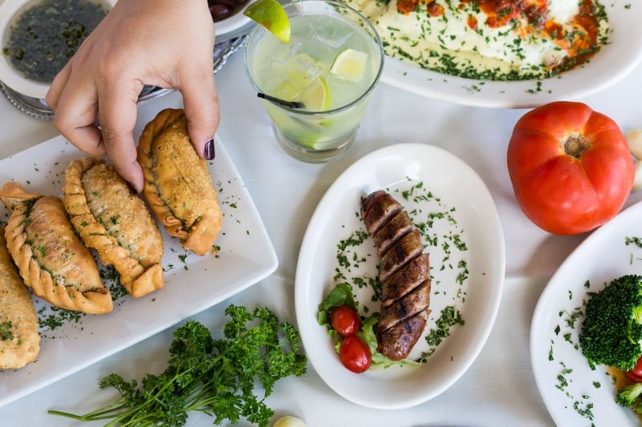

The Starting Point
Begin your culinary adventure with our tantalizing appetizers, each one a delicious prelude to the feast that awaits. Dive into the savory bliss of our empanadas, bursting with flavorful fillings and encased in a crispy golden shell. Or tantalize your taste buds with the rich and gooey provoleta, a decadent treat perfect for sharing with friends and family. With each bite, you'll embark on a journey of flavor that sets the stage for the delights yet to come.
Experience the simple yet satisfying flavors of sandwich de miga, delicate finger sandwiches made with thinly sliced white bread and various fillings such as ham, cheese, and lettuce, perfect for a light lunch or snack.

Delight in the elegance of matambre arrollado, a savory rolled and stuffed beef dish typically filled with a variety of ingredients such as carrots, bell peppers, hard-boiled eggs, and spices, then slow-cooked for a tender and flavorful experience.
Enjoy the savory goodness of empanadas, flavorful turnovers filled with a variety of ingredients such as seasoned ground beef, chicken, cheese, or vegetables, all wrapped in a crispy pastry shell.
Experience the savory delight of choripan, a popular street food featuring grilled chorizo sausage nestled in a crusty bread roll, often accompanied by chimichurri sauce for an extra burst of flavor.

Enjoy a taste of Argentina with provoleta, a mouthwatering dish featuring thick slices of provolone cheese grilled until melted and bubbly, often served with crusty bread and chimichurri sauce for dipping.